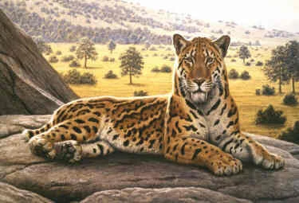

Información
Nombre científico
Megantereon whitei
Extinción en Murcia
Hace 1 millón de años
Encontrado en
yacimiento de Quibas
Longitud
1.6 - 2 m sin cola
Altura
0.8 m en la cruz
Peso
70-150 kg
Descripción
Megantereon es un género extinto de felino dientes de sable perteneciente a la subfamilia Machairodontinae. Este mamífero tenía un tamaño similar al leopardo actual, pero era más robusto y musculoso, y poseía unos colmillos superiores alargados y ligeramente curvos que pudo emplear en la caza de presas tipo mastodonte, como el anancus descubierto también en la región (pero no en el mismo yacimiento). Se cree que es el antepasado del conocido smilodon.